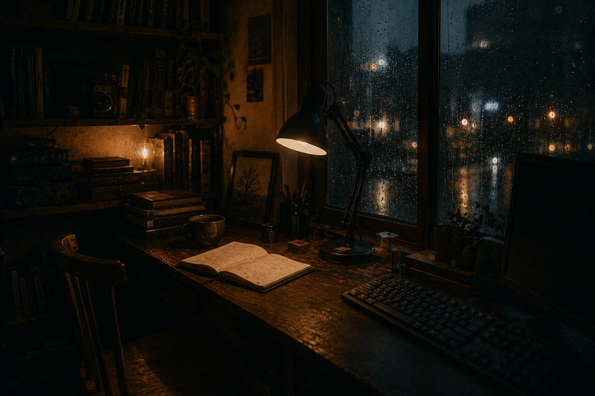

Værten · about, philosophy & contact
The keeper
of this place.

Hello. My name is Kasper Krog.
I build communities, digital spaces and small cultural projects. Most of them come down to the same thing: atmosphere, and getting people within talking distance of each other.
I live in Aarhus, Denmark. By day I work in public transportation; the rest of the time goes to community projects around games, culture, music and volunteering. Most of what I make lands somewhere between technology and atmosphere.
What keeps me curious: how digital systems could feel more human, how communities get warmer and more deliberate, how rituals and stories shape an ordinary day. The projects are all attempts at the same room, really — somewhere to gather. Games treated as art. Volunteers trusted instead of measured. Matcha. Folk music. Conversation.
The works I keep returning to mix melancholy with warmth: Disco Elysium, Malazan, cozy horror, rainy cities, ambient records, the back rooms of cultural spaces. Contrast is the constant. Light reads brighter in the dark, and a ritual means more inside a noisy life.
Meaningful things tend to get built through small acts of care. Organizing the event. Making tea for someone. Staying afterwards to stack chairs. Noticing people.
This site is an archive of what I care about: the worlds, the communities, the tea.
What holds it together.
I don't think meaning is invented out of nothing. It grows between things — between people, places, stories, memories. Something matters because it takes part in a life.
The philosophies I keep coming back to make room for process and uncertainty: process philosophy, Daoism, the existentialists. Reality as something still underway.
Light becomes brighter in darkness.
Warmth matters because cold exists.
Contrast gives experience its shape. A small kindness counts for more against a large, uncertain world.
A lot of modern systems forget there's a person at the end of them. Technology tuned for engagement instead of care. Communities counted instead of known. Culture flattened into content. What I build mostly tries to walk the other way: slower, warmer, more alive.
Atmosphere, to me, is a serious subject. The emotional texture of a place or a conversation, how a thing feels to inhabit. Rituals carry that texture through a life: tea made properly, meals shared, the walk home in the rain, staying after the event to help clean up.
The stories that stay with me are the ones where people keep caring for each other through grief and at absurd scale. Darkness isn't the point. It's where tenderness shows up best.
Most of my projects come down to one impulse: keep a few small refuges open — for culture, for reflection, for company.
The light is on.
No forms, no funnels, no newsletter. If you write, a human reads it.
- post kkandersen01@gmail.com — Danish or English; letters preferred over pitches.
- code github.com/KasperKrog92 — where this harbor's blueprints live.
- rooms Aarhus Gamestormers — the community door; the others open from there.
— if you're ever in Aarhus, the kettle rule applies to you too.